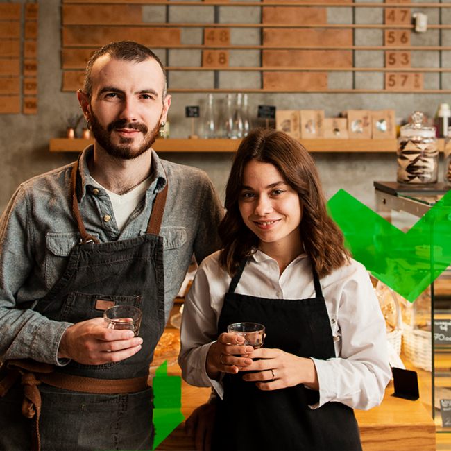

El Social Media Marketing (SMM) se ha convertido en uno de los canales más efectivos para generar ventas. Pero muchos negocios no están aprovechando su potencial completo porque no tienen una estrategia clara. En este artículo te explicamos cómo convertir tus redes sociales en una verdadera máquina de ventas.
Define metas SMART para tu estrategia de SMM
Antes de publicar un solo contenido, necesitas saber exactamente qué quieres lograr. Las metas SMART te dan claridad y dirección:
- Específicas (Specific): "Quiero aumentar mis ventas" no es suficiente. "Quiero generar 20 leads por semana desde Instagram" sí lo es.
- Medibles (Measurable): Define KPIs concretos: número de leads, conversiones, ventas directas, ROI de campañas pagadas.
- Alcanzables (Achievable): Sé ambicioso pero realista. Analiza tus recursos y capacidades actuales.
- Relevantes (Relevant): Asegúrate de que tus metas de SMM estén alineadas con los objetivos generales de tu negocio.
- Con tiempo definido (Time-bound): "En 3 meses quiero aumentar mis ventas online un 30%." El plazo crea urgencia y permite medir el progreso.
Construye un embudo de ventas en redes sociales
Las redes sociales son especialmente efectivas cuando se usan para guiar a los usuarios a través de un embudo de ventas bien diseñado:
1. Fase de conciencia (Awareness)
En esta etapa, el objetivo es que personas que no conocen tu negocio lo descubran. El contenido orgánico de alto valor (tutoriales, consejos, entretenimiento) y los anuncios de reconocimiento de marca son tus mejores aliados aquí.
2. Fase de consideración (Consideration)
Una vez que alguien te conoce, necesitas convencerlos de que eres la mejor opción. Testimonios, casos de éxito, demostraciones de producto y contenido educativo profundo funcionan muy bien en esta etapa.
3. Fase de conversión (Conversion)
Aquí conviertes el interés en ventas. Ofertas exclusivas, descuentos por tiempo limitado, retargeting a personas que visitaron tu sitio pero no compraron, y CTAs claros son fundamentales.
Contenido que vende vs. contenido que entretiene
El error más común en SMM es publicar solo contenido promocional. La regla general es seguir la fórmula 80/20: 80% contenido de valor (educativo, entretenido, inspirador) y 20% contenido promocional. Esto construye confianza y mantiene a tu audiencia comprometida.
"Las personas compran de marcas en las que confían. Las redes sociales son tu oportunidad de construir esa confianza a escala."
Aprovecha el social proof
Las reseñas, testimonios y contenido generado por usuarios (UGC) son extremadamente persuasivos. Comparte regularmente:
- Testimonios de clientes satisfechos en Stories o posts
- Fotos o videos de clientes usando tus productos
- Resultados y casos de éxito con métricas concretas
- Reseñas de Google o plataformas de e-commerce
Mide, ajusta y optimiza continuamente
Las redes sociales te dan datos en tiempo real. Úsalos. Revisa semanalmente:
- ¿Qué tipo de contenido genera más engagement?
- ¿A qué hora tienen más alcance tus publicaciones?
- ¿Qué anuncios tienen mejor costo por resultado?
- ¿Qué plataforma genera más conversiones?
Con estos datos, puedes tomar decisiones informadas y mejorar continuamente tu estrategia.
¿Quieres implementar esta estrategia en tu negocio?
Nuestro equipo de LocalExpertiz puede diseñar e implementar una estrategia de SMM personalizada para impulsar tus ventas.
Solicitar consulta gratuita →